「OCI Network Firewall」はパロアルトネットワークスの次世代ファイアウォール技術を基に構築されたOCIクラウドネイティブのマネージド・ファイアウォールとなっており、URLフィルタリングやTSL/SSL検査などの機能を提供します。
OCI Network Firewallの説明につきましてはOCIチュートリアル「OCI Network Firewallを構築する」を参照ください。
Network Firewallは通信経路を仲介する形（インライン）で構成しますが、本チュートリアルで扱います「トンネルインスペクション」は通信経路の外部から監視する形（アウトオブバンド）で構成することが可能です。そのため、既存の通信経路に変更を加えずに、経路外部からトンネル検査という形でIDSを行うことができます。
本チュートリアルでは始めに、簡易的な通信経路を用意し、その後「トンネル検査」構成を構築していく流れで進めていきます。
所要時間 :
- 約90分
(このうちNetwork Firewallインスタンスの作成に40分ほどかかります)
前提条件 :
- ユーザーに必要なIAMポリシーが割り当てられていること。ポリシーの詳細はドキュメントを参照ください。
使用サービス
- Compute Instance
- Network Load Balancer
- OCI Network Firewall
- VTAP
注意 :
- ※チュートリアル内の画面ショットについてはOracle Cloud Infrastructureの現在のコンソール画面と異なっている場合があります。
はじめに
以下が本チュートリアルで作成するNetwork Firewallの構成図と設定です。
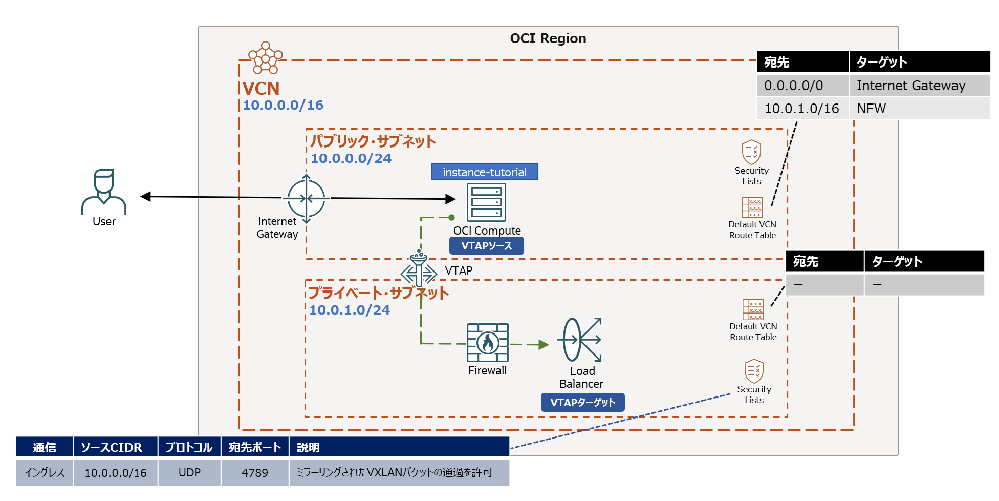
手順の流れとして、まずは以下のような簡易的な事前環境を作成し、その環境に後付けでNetwork Firewallを構築していきます。
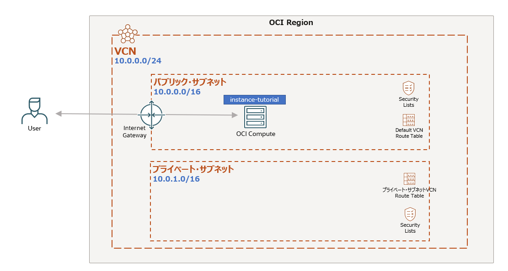
1. 事前環境の作成
こちらの手順１では、まず事前環境として、上で示しました構成を構築していきます。
1-1. VCNの作成
[VCNウィザードの起動] を選択
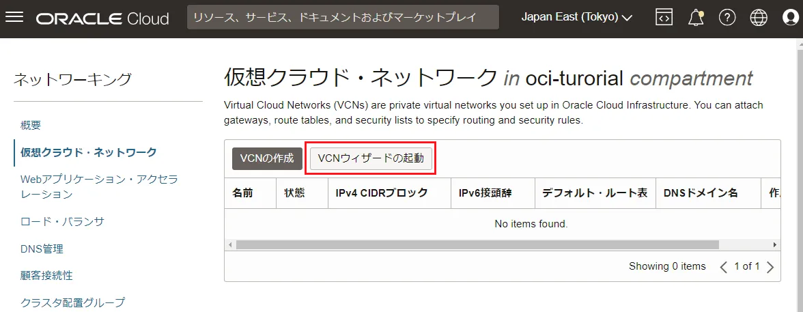
[インターネット接続性を持つVCNの作成] を選択します。 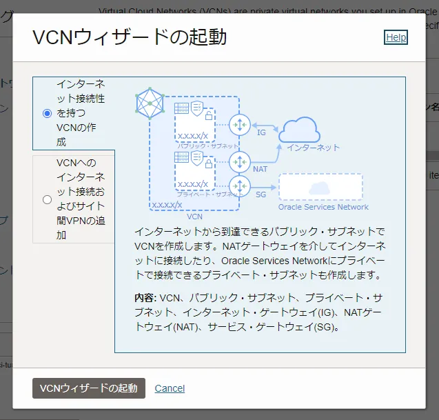
以下の項目を入力し、[次]を選択します。
- 基本情報
VCN名：VCN-NFWtutorialコンパートメント：<VCNを作成するコンパートメントを選択>
- VCNの構成
VCN IPv4 CIDRブロック：10.0.0.0/16
- パブリック・サブネットの構成
IPv4 CIDRブロック：10.0.0.0/24
- プライベート・サブネットの構成
IPv4 CIDRブロック：10.0.1.0/24
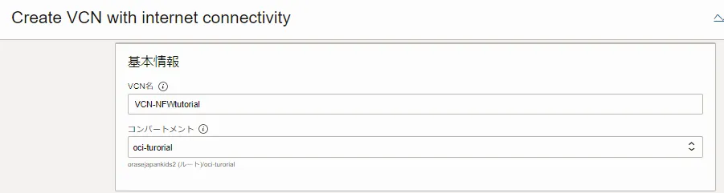 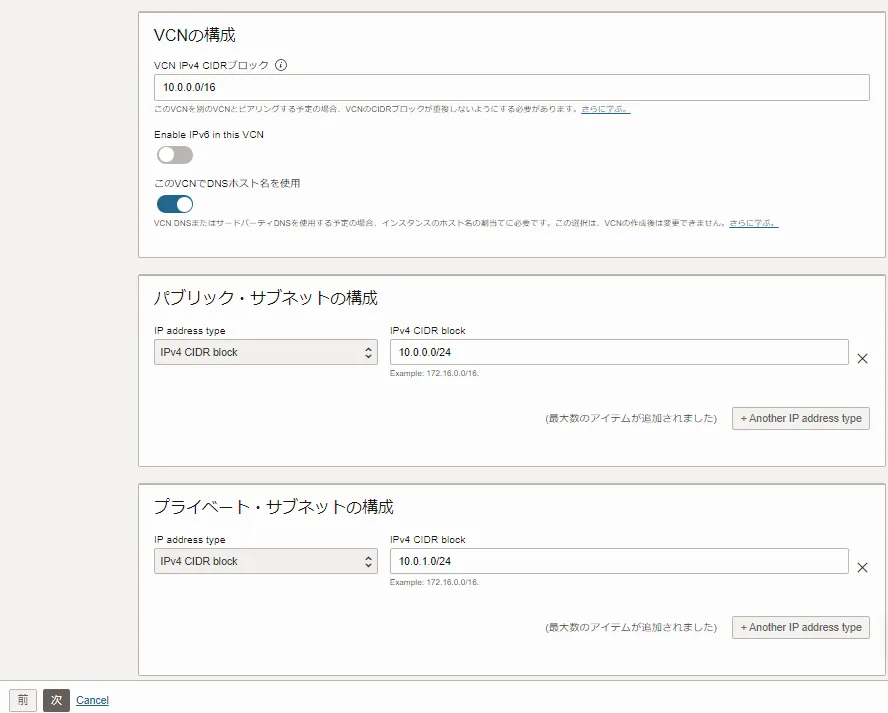
その後、作成されるリソースを確認したら[作成]をクリック、リソースの作成が完了したことを確認します。
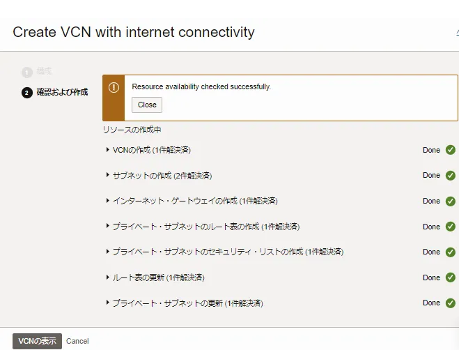
1-2. コンピュート・インスタンスの作成
コンピュート・インスタンスをパブリック・サブネット上に配置します。
OCIコンソール画面左上の[メニューボタン] → [コンピュート] → [インスタンス] → [インスタンスの作成]をクリックし、「コンピュート・インスタンスの作成」画面にて、インスタンスをそれぞれ作成します。 検証のため、入力項目は配置するサブネット以外は任意ですが、ここでは以下のように入力しています。
名前：任意（例：instance-tutorial）-
コンパートメント：<ポリシーを作成するコンパートメントを選択> -
配置（可用性ドメイン）：任意（例：AD１） - イメージとシェイプ
イメージ：任意（例：Oracle Linux 8）シェイプ：任意（例：VM.Standard.E5.Flex）
- プライマリVNIC情報
VNIC名：inst-tutorialVCN：先ほど作成したVCN（VCN-NFWtutorial）サブネット：先ほど作成したVCNのパブリック・サブネット（パブリック・サブネット-VCN-NFWtutorial（リージョナル））
SSHキーの追加：「キー・ペアを自動で生成」を選択し、秘密キーと公開キーをそれぞれ保存。（手元に既存のSSHキーがある場合は、「公開キー・ファイルのアップロード」または「公開キーの貼りつけ」を選択し、公開キーを登録してください。）
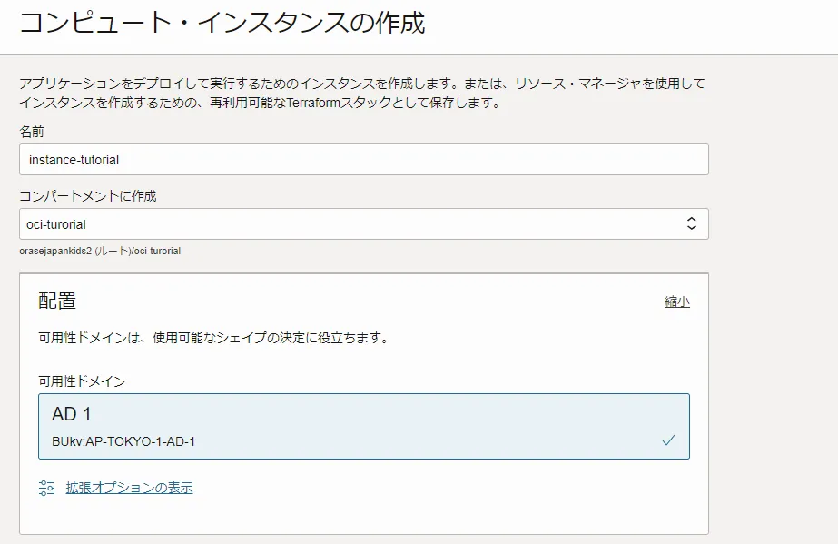 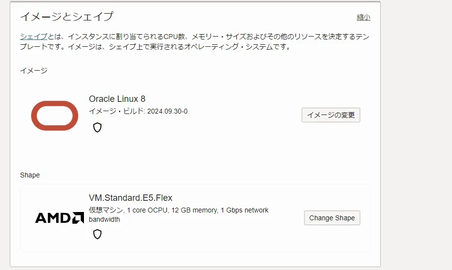 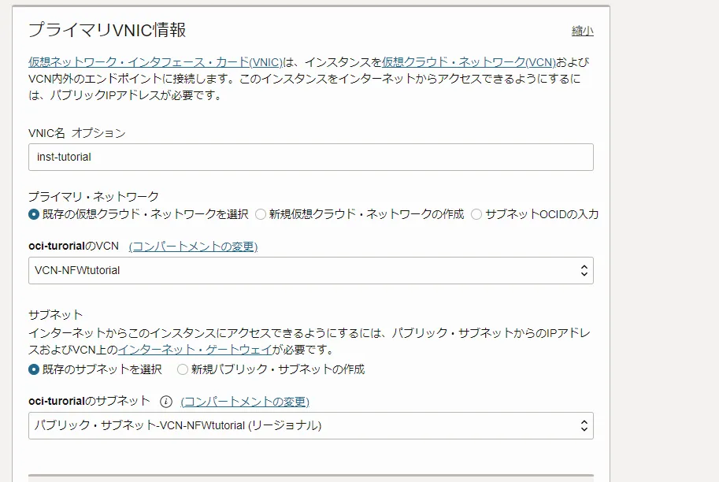
作成を選択し、状態がプロビジョニング中から実行中になったことを確認します。
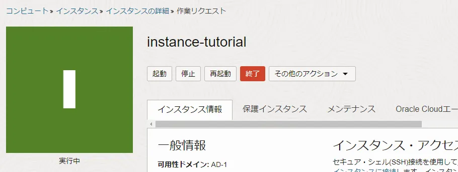
この時点で、作成したインスタンスにSSH接続ができるはずですので、念のため確認をしておきます。
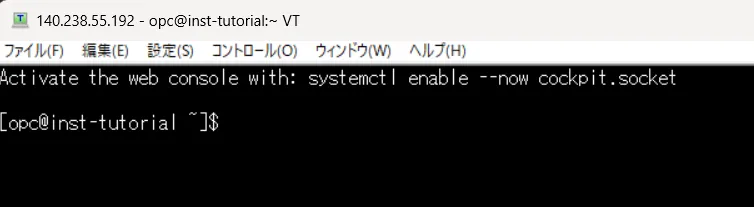
これで「ユーザー ー インターネット・ゲートウェイ ー コンピュート」という簡易的な通信構成ができました。
次の手順からは、この構成にリソースを付け加える形でNetwork FirewallのIDSを行えるよう設定していきます。
2. Network Firewallを作成する
NFWの作成には40分ほどかかりますので、手順が前後しますが、VTAPの設定を行う前にNetwork Firewallを作成しておきます。
2-1. ファイアウォール・ポリシーの作成
Firewallインスタンスを作成する際、ネットワーク・トラフィックを制御するルールをまとめたポリシー「ネットワーク・ファイアウォール・ポリシー」を指定する必要があるため、インスタンス作成前に用意します。
OCIコンソール画面左上の メニューボタン → [アイデンティティとセキュリティ] → [ファイアウォール] → [ネットワーク・ファイアウォール・ポリシー] と選択、「ネットワーク・ファイアウォール・ポリシーの作成」をクリックし、ポリシーを作成します。 設定項目は本チュートリアルでは以下のようにします。
名前：network_firewall_policyコンパートメント：<ポリシーを作成するコンパートメントを選択>
!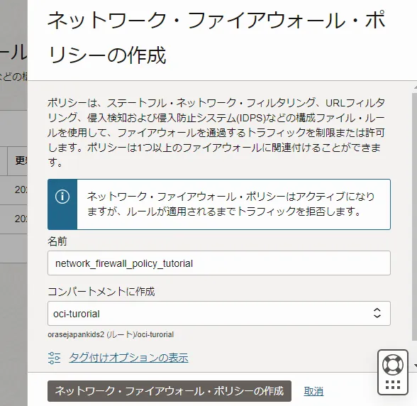
作成ボタンを選択すると詳細画面に移りますので、ファイアウォールを通過するパケットを検知できるよう、ルールを設定していきます。
2-2. ポリシー・ルールの設定
VTAPによりミラーリングされたパケットを検査するためには「セキュリティ・ルール」と「トンネル検査ルール」を設定する必要があります。
ファイアウォールは通過するパケットをセキュリティ・ルールと照合し通信の可否を判断、その後にトンネル検査ルールにてVXLANプロトコルにてカプセル化されたパケットの中身から宛先・送信元IPを検査したのち、VTAPターゲットに返します。
・セキュリティ・ルールの作成
「セキュリティ・ルールの作成」を選択し、以下の項目を入力してセキュリティ・ルールを作成します。
名前：ids-ruleルール・アクション：侵入検知
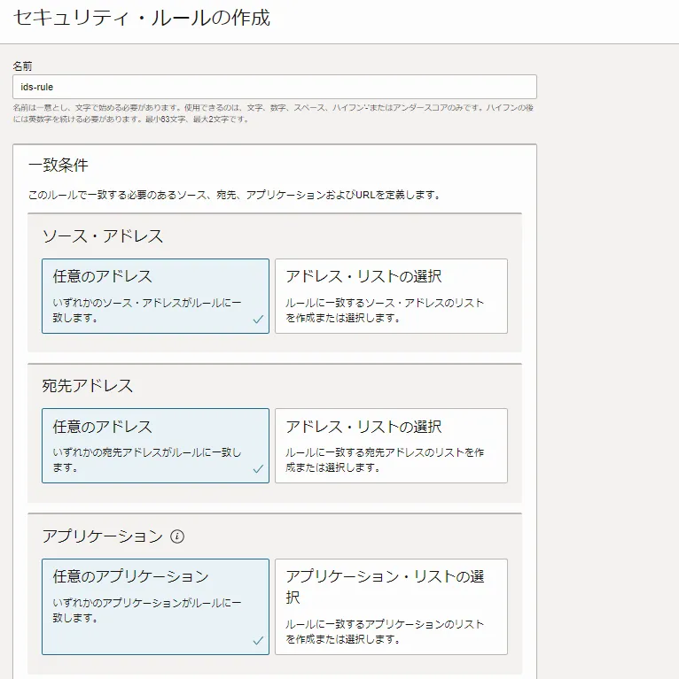 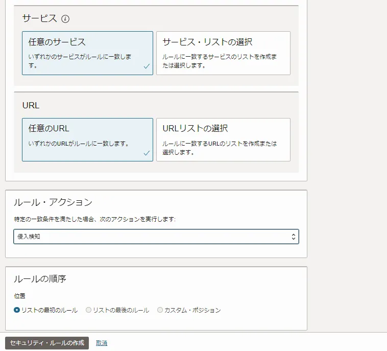
・トンネル検査ルールの作成
「セキュリティ・ルールの作成」を選択し、以下の項目を入力してセキュリティ・ルールを作成します。
名前：tunnel-inspection-ruleルール・アクション：検査とログの取得
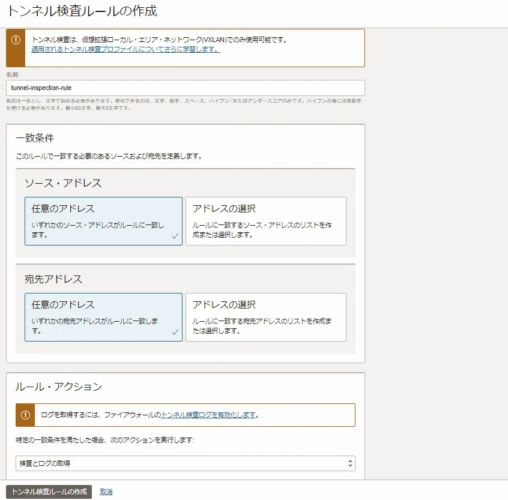
2-3. Network Firewallインスタンスの作成
インスタンスを作成します
名前：firewall-tutorialコンパートメント：<ファイアウォール・インスタンスを作成するコンパートメントを選択>-
ネットワーク・ファイアウォール・ポリシー：network_firewall_policy_tutorial（手順2-1で作成したポリシーを選択） - 強制ポイント
仮想クラウド・ネットワーク：VCN-NFWtutorialサブネット：プライベート・サブネット-VCN-NFWtutorial リージョナル
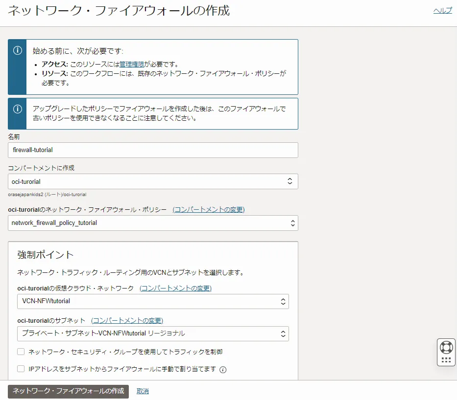
作成中にNetwork Firewallインスタンスの詳細画面にIPv4アドレスが表示されますので、この後の手順4にて行うルート表の設定のため、表示されたIPv4アドレスをメモに控えておきます。
3. VTAPを設定する
仮想アクセスポイント（VTAP）とは指定したソースが受け取ったトラフィックを、選択したターゲットに対してミラー化するサービスです。VTAPサービスは無償でご利用いただけますが、VTAPソースやVTAターゲットに対しては課金が発生しますので、ご注意ください。
本チュートリアルではバックエンドに何も配置せず、ネットワーク・ファイアウォールによる侵入検知の確認をログで行いますが、VTAPターゲットであるロード・バランサのバックエンドにインスタンスを配置することで、パケットを取得し検査を行うことも可能です。こちらの手順に関しましては、VTAPのOCIチュートリアル「VTAPでパケットをミラーリングし、パケットキャプチャをする」をご覧ください。
ここではVTAPソースを、手順1にて作成したコンピュート・インスタンス、VTAPソースをネットワーク・ロード・バランサとして設定を行っていきます。
3-1. ネットワーク・ロード・バランサ（VTAPターゲット）の作成
OCIコンソール画面左上の メニューボタン → [アイデンティティとセキュリティ] → [ネットワーキング] → [ロード・バランサ] → [ネットワーキング・ロード・バランサ] と選択、「ネットワーキング・ロード・バランサの作成」をクリックし、以下の項目でロード・バランサを作成します。 ネットワーク・ロード・バランサの作成を選択
ロード・バランサ名：nlb_tutorial-
可視性タイプの選択：プライベート - ネットワーキングの選択
仮想クラウド・ネットワーク：VCN-NFWtutorialサブネット：プライベート・サブネット-VCN-NFWtutorial
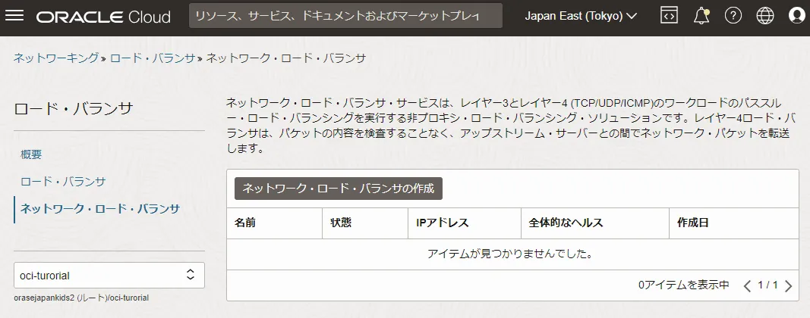
[次]を選択。リスナーの構成を以下の設定で入力します。VTAPによってミラーリングされるパケットはVXLANプロトコルでカプセル化されるため、VXLANの使用するUDP/4789を設定します。
リスナー名：listener_tutorialリスナーで処理するトラフィックのタイプ：UDPポート番号：4789
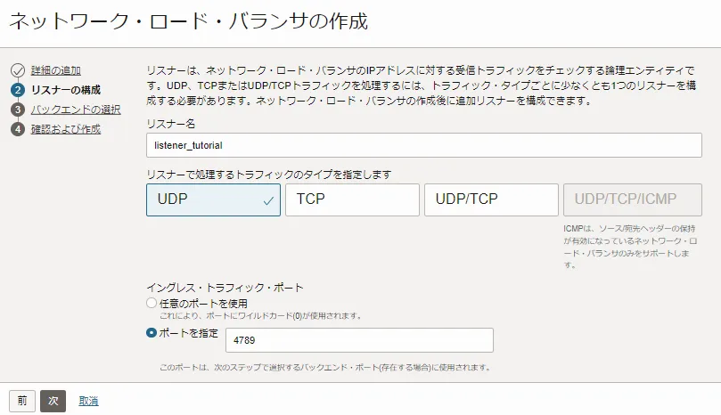
バックエンド・セットは設定を行いません。適用な名前を設定し、そのまま[次]を選択します。
バックエンドセット：backendset_tutorial
確認画面を確認し、ネットワーク・ロード・バランサの作成をクリックします。
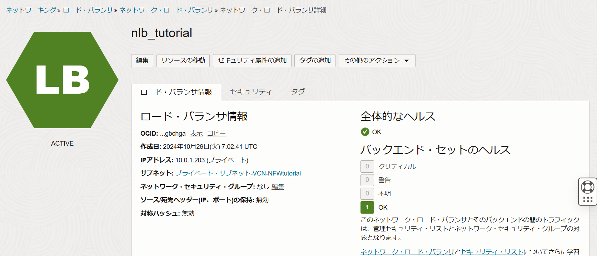
この後、プライベートサブネットのセキュリティリストにて、ミラーリングされたパケットの通信（UDP/4789）を受け入れるためのイングレスルールを追加します。
3-2. プライベートサブネットのセキュリティリストの設定
プライベートサブネットのセキュリティ・リストの詳細画面に戻ります。
OCIコンソール画面にアクセスし、左上の [メニューボタン] → [ネットワーキング] → [仮想クラウド・ネットワーク] と移動、作成したVCN「VCN-NFWtutorial」を選択し、左のリソース一覧からセキュリティ・リストをクリックします。
「プライベート・サブネット-VCN-NFWtutorialのセキュリティ・リスト」をクリックし、[イングレス・ルールの追加]を選択、以下のルールを追加します。
ソース・タイプ：CIDRソースCIDR：10.0.0.0/16IPプロトコル：UDP宛先ポート範囲：4789
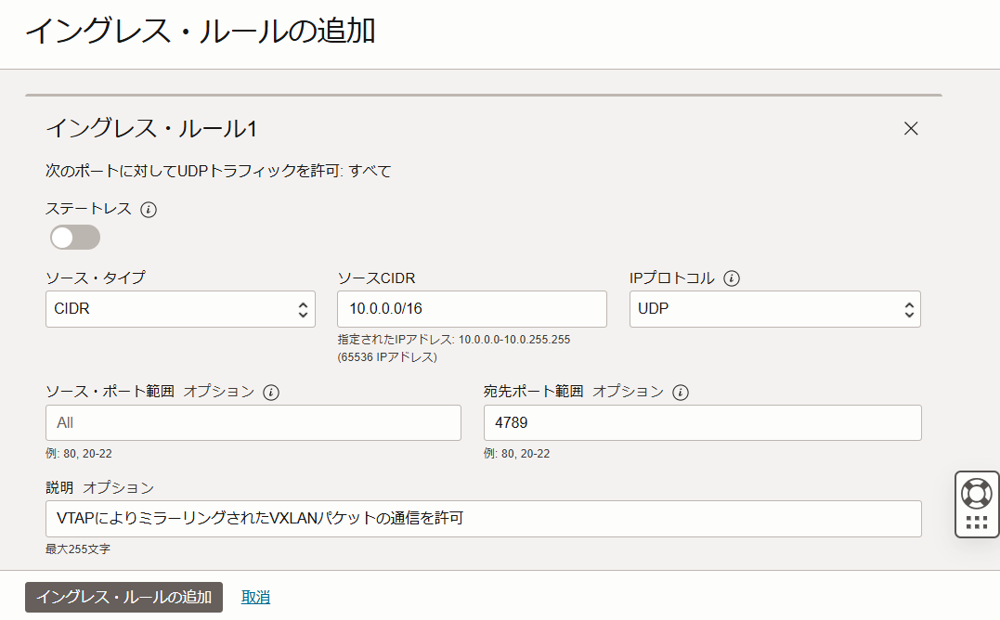
追加後、イングレス・ルールに正しく追加されたことを確認します。
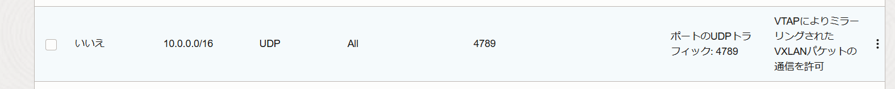
3-3. VTAPの設定
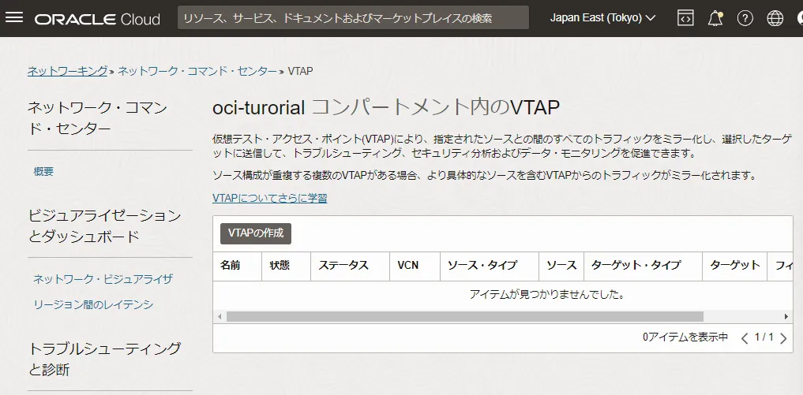
名前：vtap-tunnelinspection-turorialコンパートメント：<VTAPを作成するコンパートメントを選択>-
VCN：VCN-NFWtutorial - ソース
ソースタイプ：インスタンスVNICサブネット：パブリック・サブネット-VCN-NFWtutorialインスタンスのVNIC：inst-tutorial（instance-tutorial）
- ターゲット
リソース・タイプ：ネットワーク・ロード・バランササブネット：プライベートサブネット-VCN-NFWtutorialネットワーク・ロード・バランサ：nlb_tutorial（手順3-1で作成したロード・バランサ）
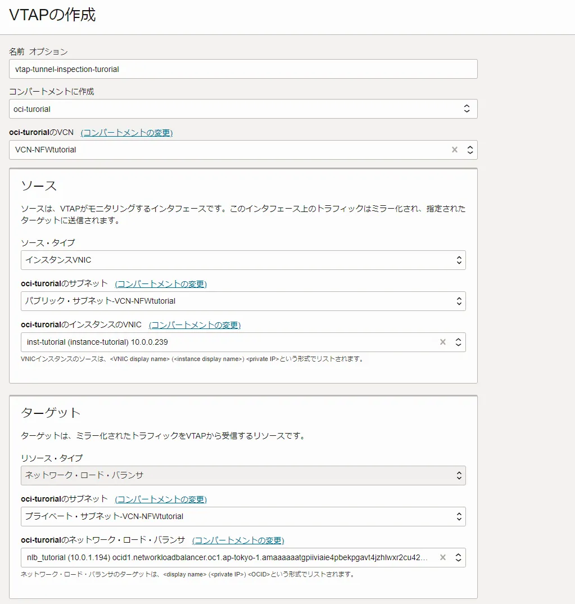
取得フィルタはミラー化するトラフィックの制御ルールを設定します。 以下の項目を入力し、取得フィルタを作成したら、[VTAPの作成]を選択します。
取得フィルタ：新規取得フィルタの作成名前：filter-tunnel-inspection-tutorialコンパートメント：<取得フィルタを作成するコンパートメントを選択>
- ルール１
トラフィックの方向：イングレスIPプロトコル：すべて
- ルール2
トラフィックの方向：エグレスIPプロトコル：すべて
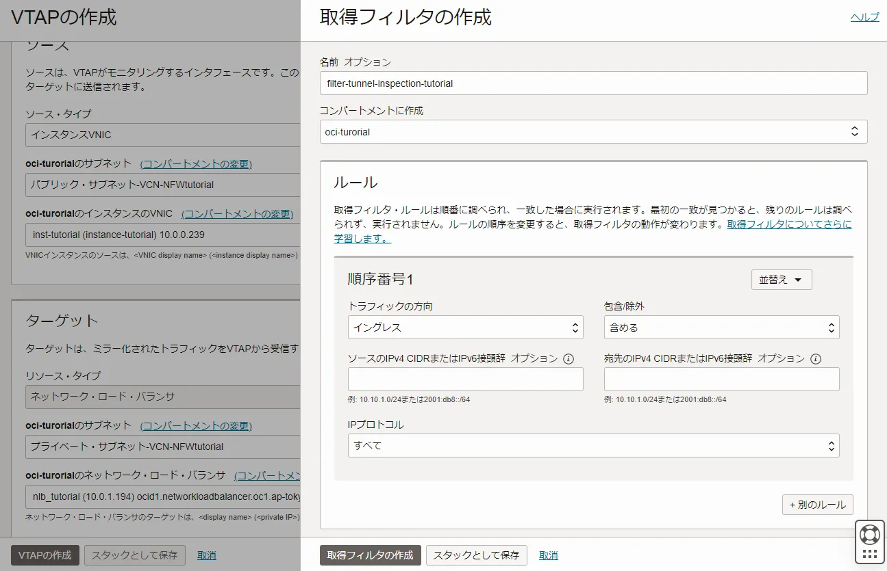
[起動]を選択するとステータスが実行中になり、VTAPが正常に起動されたことを確認します。
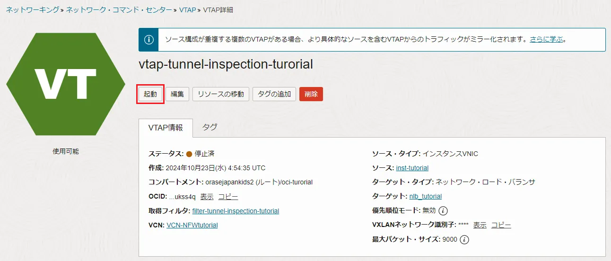
4. Network Firewallを追加する
手順2-3にて作成したNetwork Fireworkインスタンスの作成が完了後、以下の手順を行っていきます。
4-1. ルート表の設定
OCIコンソール画面にアクセスし、左上の [メニューボタン] → [ネットワーキング] → [仮想クラウド・ネットワーク] と移動、作成したVCN「VCN-NFWtutorial」を選択し、左のリソース一覧からルート表をクリックします。
「default route table for VCN-NFWtutorial」をクリックし、VTAPソースからVTAPターゲットまでの通信経路にNetwork Firewallを経由するよう、「ルート・ルールの追加」を選択し、以下のルールを追加します。
ターゲット・タイプ：プライベートIPサブネットまたはVLANコンパートメント：<コンパートメントを選択>宛先タイプ：CIDRブロック宛先CIDRブロック：10.0.1.0/24ターゲット選択：<Network FirewallのプライベートIPアドレス>
これで、プライベート・サブネットへの通信はNetwork Firewallにルーティングされるようになります。
4-2. Network Firewallのログの有効化
[アイデンティティとセキュリティ]→[ファイアウォール]→[ネットワーク・ファイアウォール]→[ネットワーク・ファイアウォール詳細]→[ログ] と遷移し、Network Firewallのログ画面に移ります。
「Theat Log」と「Tunnel Inspection Log」を有効化します。ログ・グループを作成していない場合は、「新規グループの作成」より、適用なログ・グループを作成し、設定します。
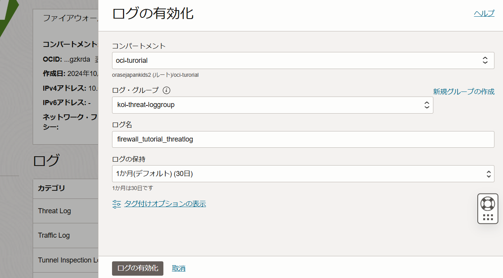
5. 侵入検知（IDS）を確認する
しばらく放置していると、Network Firewallのメトリック画面からパケットが処理されているのが分かります。
手順1にて作成したインスタンスにSSH接続を行うとより分かりやすくなります。
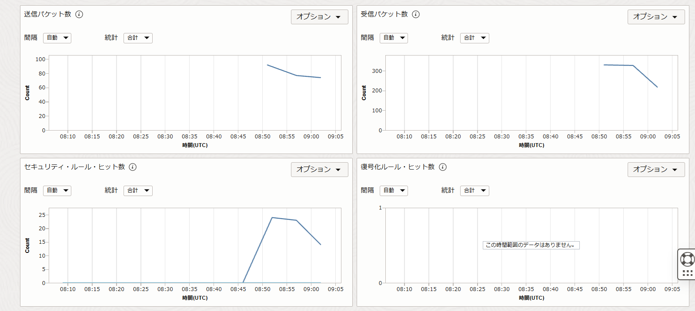
ミラーリングされたパケットのログについては、Tunnel Inspection Logで確認することができます。
また、脅威のログについては先ほど有効化したthreat logで確認ができ、以下のログのようにインスタンスがドイツからブルートフォース攻撃を受けていることなどが観察できる場合があります。
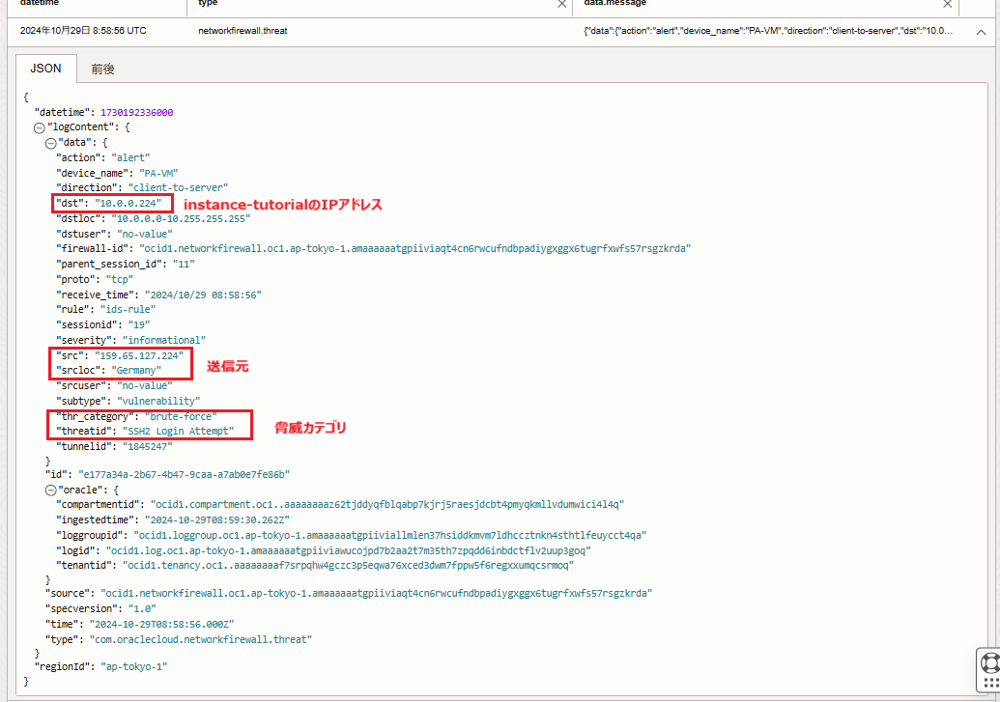
5-1. 手動でIDSを検知させる
放置していると、上記のようにある程度脅威を検知していることが確認できますが、最後の手順として意図的に検知をさせます。
方法としてはインスタンスにSSH接続をし、インスタンスから以下のコマンドでeicarファイルをhttpで取得します。
curl http://files.trendmicro.com/products/eicar-file/eicar.com
eicarのサイトではeicarファイルのhttpでの提供は終了しているため、TREND MICRO社のサイトからEICARファイルを上記のコマンドで取得しています。 httpsで取得すると暗号化により検知されないため、httpを使用することに注意してください。
実行例）
[opc@inst-tutorial ~]$ curl http://files.trendmicro.com/products/eicar-file/eicar.com
X5O!P%@AP[4\PZX54(P^)7CC)7}$EICAR-STANDARD-ANTIVIRUS-TEST-FILE!$H+H*[opc@inst-tutorial ~]$
数分後、theat logで確認すると、取得したeicarファイルが検知されていることが分かります。
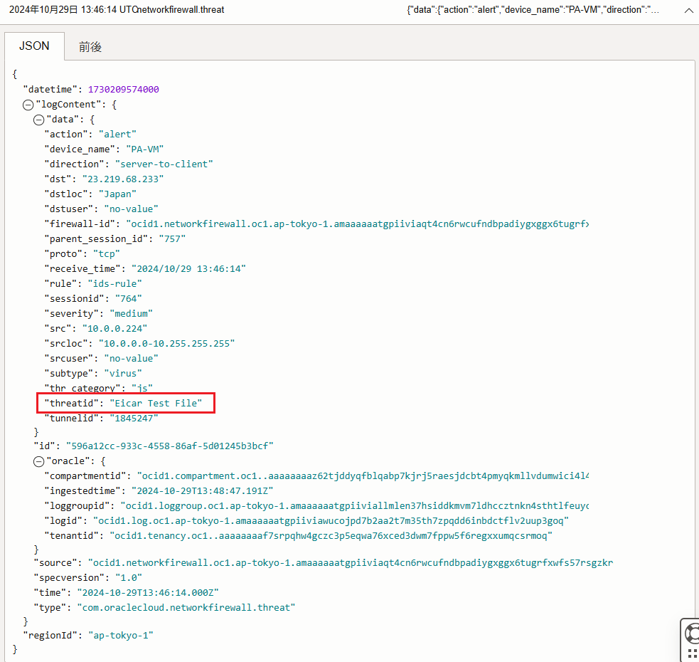